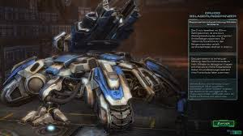

|
|
StarCraft is a military science fiction media franchise created by Chris Metzen and James Phinney, and owned by Blizzard Entertainment. The series centers on a galactic struggle for dominance between four species—the adaptable and mobile Terrans, the ever-evolving insectoid Zerg, the powerfully enigmatic Protoss, and the "god-like" Xel'Naga creator race—in a distant part of the Milky Way galaxy known as the Koprulu Sector at the beginning of the 26th century. The series debuted with the video game StarCraft in 1998. Since then it has grown to include a number of other games as well as eight novelizations, two Amazing Stories articles, a board game, and other licensed merchandise such as collectible statues and toys. Blizzard Entertainment began planning StarCraft in 1995, with a development team led by Metzen and Phinney. The game debuted at E3 1996, and uses a modified Warcraft II game engine. StarCraft also marked the creation of Blizzard Entertainment's film department; the game introduced high quality cinematics integral to the storyline of the series. Most of the original development team for StarCraft returned to work on the game's official expansion pack, Brood War; the game's development began shortly after StarCraft was released. In 2001, StarCraft: Ghost began development under Nihilistic Software. Unlike the previous real-time strategy games in the series, Ghost was to be a stealth-action game. After three years of development, work on the game was postponed in 2004. Development of StarCraft II: Wings of Liberty began in 2003; the game was later announced on May 19, 2007 and was released on July 27, 2010. The StarCraft II franchise continued with the StarCraft II: Heart of the Swarm expansion, which was released on March 12, 2013. The third StarCraft II installment is titled StarCraft II: Legacy of the Void, released on November 10, 2015. The original game and its official expansion have been praised as one of the benchmark real-time strategy games of its time. The series has gathered a solid following around the world, particularly in South Korea, where professional players and teams participate in matches, earn sponsorships, and compete in televised matches.[1] As of May 31, 2007, StarCraft and Brood War have sold almost 10 million copies combined.[2] In addition, the series was awarded a star on the Walk of Game in 2006,[3] and holds four Guinness World Records in the Guinness World Records Gamer's Edition of 2008.
This is a siege tank. Click to go back
 Little on Starcraft
Little on Starcraft